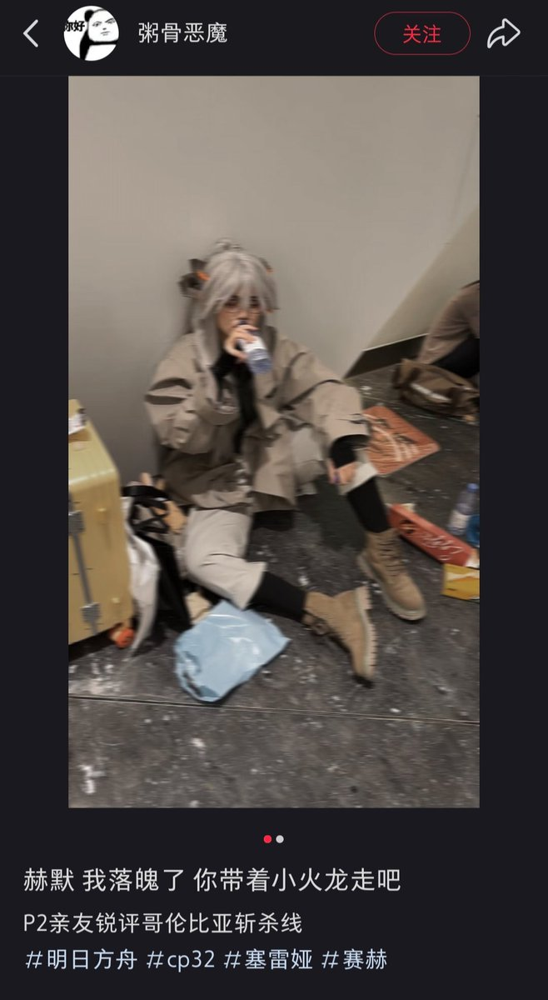

腐烂培根卷
@ppppggggjjjj
RT @ohuhhiImhere: my favorite Saria coser in this CP32 kkkkkkkkkkk
check this out plzzzzz↓
https://t.co/UaWBVqc5wj

14
@ohuhhiImhere
my favorite Saria coser in this CP32 kkkkkkkkkkk
check this out plzzzzz↓
https://t.co/UaWBVqc5wj https://t.co/FBw1kEtmr8